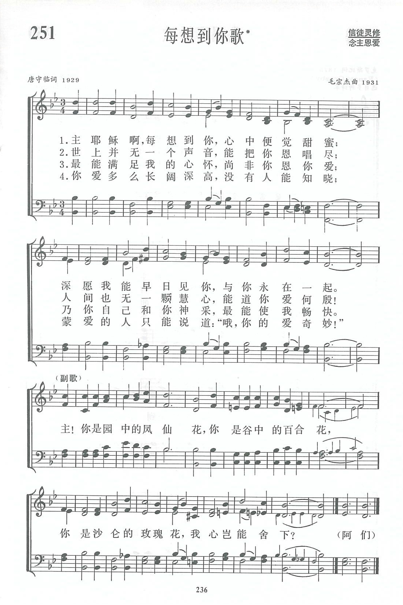

|
|
|
|
1 Thine for ever! God of love, 2 Thine for ever! Lord of life, 3 Thine for ever! O how blest 4 Thine for ever! Shepherd, keep 5 Thine for ever! Thou our guide, |
第335首《永屬上主歌》 |
|
https://www.zanmeishige.com/tab/13924.html?songbook=1&index=251

|
|
|
|
|


https://www.youtube.com/watch?v=RBnxOrMTr6o - Thine Forever God of Love Hymn Lyrics
https://youtu.be/IcVSCFDUfAY - Thine Forever! God of Love | 1940 Hymnal #427
https://youtu.be/9EJtsBA-eoY
| Text: | Thine Forever, God of Love |
| Author: | M. F. Maude, 1819-1913 |
| Tune: | VIENNA |
| Composer: | J. H. Knecht, 1752-1817 |
| Short Name: | Mary Fawler Maude |
| Full Name: | Maude, Mary Fawler, 1819-1913 |
| Birth Year: | 1819 |
| Death Year: | 1913 |
Maude, Mary Fawler, née Hooper,
daughter of George Henry Hooper, of Stanmore, Middlesex, was married in 1841 to the late Joseph Maude, some time Vicar of Chirk, near Ruabon, and Hon. Canon of St. Asaph, who died in Feb. 1887. Mrs. Maude's hymns were published in her Twelve Letters on Confirmation, 1848, and in Memorials of Past Years, 1852 (privately printed). Her best known hymn, is "Thine for ever, God of love" (Confirmation). Concerning it Mrs. Maude says: --
"It was written in 1847 for my class in the Girls' Sunday School of St. Thomas, Newport, Isle of Wight, and published in 1848 at the beginning of a little book called ‘Twelve Letters on Confirmation,' by a Sunday School Teacher, and reprinted in the Memorials, 1852."
[S. MSS.]
The original is in 7 stanzas of 4 lines. It is usually abbreviated, and stanzas ii., iii. transposed, as in the Society for Promoting Christian Knowledge Church Hymns, 1871; the Hymnal Companion; Hymns Ancient & Modern, 1875, Thring's Collection, 1882, and most other hymnbooks. As a hymn for Confirmation its use is extensive. The omitted stanzas are:—
"Thine for ever in that day
When the world shall pass away:
When the trumpet note shall sound,
And the nations underground
"Shall the awful summons hear,
Which proclaims the judgment near.
Thine for ever.
'Neath Thy wings Hide and save us,
King of Kings."
-- John Julian, Dictionary of Hymnology (1907)
Notes
Thine for ever, God of love, p. 720, i. The original text of the five stanzas which constitute this hymn in Church Hymns, 1903, was restored at the special request of Mrs. Maude. This restored text is also repeated in Hymns Ancient & Modern, 1904; and The English Hymnal, 1906. An extended note of considerable interest is in Brownlie's Hymns & Hymn Writers of the Church Hymnary, (London: H. Frowde, 1899), pp. 238-9. In the Strand Magazine of May 1895, there is a portrait of Mrs. Maude, and a facsimile of the original manuscript.
--John Julian, Dictionary of Hymnology, New Supplement (1907)
Tune Information
| Title: | VIENNA (Knecht) |
| Composer: | Justin Heinrich Knecht (1799) |
| Meter: | 7.7.7.7 |
| Incipit: | 32135 43671 27654 |
| Key: | G Major |
| Copyright: | Public Domain |
| Short Name: | Justin Heinrich Knecht |
| Full Name: | Knecht, Justin Heinrich, 1752-1817 |
| Birth Year: | 1752 |
| Death Year: | 1817 |
Justin Heinrich Knecht Germany 1752-1817.
Born at Biberach Baden-Wurttemberg, Germany, he attended a Lutheran college in Esslingen am Meckar from 1768-1771. Having learned the organ, keyboard, violin and oratory, he became a Lutheran preceptor (professor of literature) and music director in Biberach. It was a free imperial city until 1803 and had a rich cultural life. He became organist of St. Martin’s Church in 1792, used by both Lutherans and Catholics, and was there for many years. He led an energetic, busy musical life, composing for both the theatre and church, organizing subscription concerts, teaching music theory, acoustics, aesthetics, composition, and instruments at the Gymnasium, affiliated to the Musikschule in 1806. He went to Stuttgart in 1806 in hopes of a post there as Kapellmeister, serving two years as Konzertmeister, but he was appointed Direktor Beim Orchester by the King of Wurttemberg in 1807. However, he returned to his former life in 1808 and remained there the rest of his life. He died at Biberach. He wrote 10 vocals, 11 opera and stage works, one symphony, 3 chamber music instrumentals, 7 organ works, 4 piano works, and 6 music theories. He was an author composer, editor, contributor, musician, compiler, and lyricist.
John Perry
第335首 永属上主歌 Thine for ever! God of Love _Hooper
经文：“惟有你们是被拣选的族类……是属神的子民”(彼前2：9)。
《永属上主歌》是英国新港圣公会圣多马堂牧师胡珀(Hooper)的妻子马利亚.莫德(M．F．Maude，l819一1913)所作。
莫德小姐自青年时代起就爱写文章，举凡风俗习惯、历史文物、宗教修养，都在她书写的范围内，曾由英国圣公会广传福音知识会出版过三本促进信徒深入理解基督教基本要道的书。莫德与胡珀牧师结婚后，更努力于教会工作，相夫教子，亦亲自担任主日学教员。1847年她因健康关系，易地休养，在客居异乡时，常常想念新港教会的主日学儿童，经常给他们写信，在一封信上附寄了这首《永属上主歌》。
诗中分别称颂主为爱之神、救世君、生命神、好牧人与指南针。翌年她把所写的信收为专集，以这首诗作为前言。书的全名为：《一个主日学教员致准备接受坚振礼者的十二封信》，以后又在她的《往年记事》一书再版。原诗共七节，《新编》根据《普天颂赞》(旧版)为五节。
这首诗所用的调是根据普莱耶尔曲改编。按普莱耶尔(I.J .Pleyel，1757一1831)在王沛纶编的《音乐辞典》里译作浦雷尔，是奥地利有名的作曲家海顿的高足和朋友，曾任德国施特拉斯堡大教堂音乐总指挥。1795年去巴黎，开始出版海顿全集；1807年建钢琴厂，该厂今仍用他的名字为厂名。这首曲调可谓承海顿的师传，充满了快乐的感情，素有一首快乐之歌配合上愉快之词的美誉。
乐圣海顿非常喜欢普莱耶尔的音乐，他的每次音乐会海顿都一定去听。德国另一位音乐大师莫扎特也很欣赏他的作品。这首诗的调名为《普莱耶尔赞美诗(PLEYEL'S HYMN)》是由普莱耶尔的第四首弦乐四重奏(作品7号之4)的第二乐章慢板中选出。该曲于1782年出版。